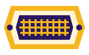

A1 · Woven
Harbor cloth
Indigo cotton with a saffron selvedge.
Saturday market · Table 14
Useful pieces, gathered by color and texture.

A1 · Woven
Indigo cotton with a saffron selvedge.
B2 · Pantry
Juniper, mint, and dried lemon.
C3 · Bakery
Cut for a shared picnic.
Weave note: three compact pieces travel together.
Pickup note: collection windows stay fixed.